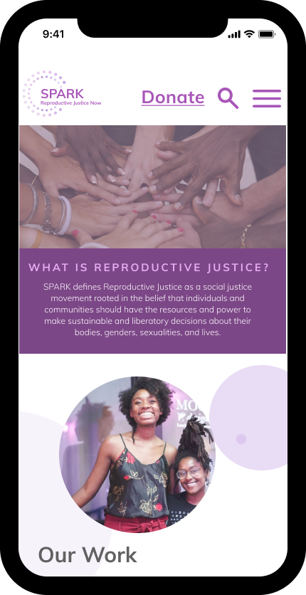

About The Project
This project is a website and mobile redesign for SPARK, which is a non-profit organization created to amplify the voices of women, people, and bring attention to reproductive justice.
Challenge
SPARK was designed to inform and educate women and people in the LGBTQ+ community on their reproductive rights and the pressing issues they face. We have observed that users have a hard time understanding the key purpose of the organization due to overwhelming navigation and poor user interface elements causing users confusion when looking for key details about the organization.
Research
Building this project was a team effort so I want to start off by acknowledging my teammates. Everyone took part in the research as well as the UI design. We all took equal parts in brainstoming the choice of website, creating interview questions, wireframing, and user interface design.
It was a great experience collaborating on this re-design from start to finish and i’m eager to collaborate on more work in the future!
User Interviews
As a team, we conducted surveys and interviews relating to the user’s understanding of the website and the organization.
What did I find?
-
Many users don’t know about their reproductive rights.
-
Users aren’t clear about what their donations are going to.
-
Users feel overwhelmed by the navigation bar.
-
Users feel confused about the main purpose of the organization.
-
Users noticed some navigation items leading them to blank pages with no information to showcase.

What the user is saying...
"A woman should not be told what to do with her body."
-Anonymous
Affinity Diagram
After interviewing many different users we continued to ideate the data and separate information into different categories.
User Persona

Storyboard

Our storyboard indicates that the user has been struggling with conception and is looking for a supportive resource that will allow her to share her sentiments on the issues women face when trying to concieve.
She comes across SPARK and is interested in learning more. She is pleased to find out that SPARK is a non-profit organization based in her hometown of Atlanta and that the website showcases a clear understanding of how she is able to get involved.
Ideation
Current SPARK Website
As shown above, the current website has a lot of elements clustered together. The use of color scheme is stark against the grey background and the navigation expands into tertiary drop down menus, creating an overwhelming experience for users.
The website was also created through Wordpress, giving us insight on the tools that were used to create the pages.
Card Sorting & Sitemap
As a team, we went through the process of elimination based off of problem areas the user was facing to create a more streamlined navigation system. We wanted to pay close attention to Information Architecture, keeping the most important navigation at the top of the page. We lessened the amount of items within the navigation bar and planned to highlight the most important details about the organization on the homepage.
Design Phase
Low Fidelity Wireframes
We started the design process by wireframing our ideas. We liked the idea of keeping the design simple and intuitive for the user.
What changes did we make?
-
Users are able to filter their experience by location, budget, and desired activities.
-
Users are able to browse a location on the homescreen.
-
They can discover and follow other travelers.
-
They can message and collaboratively build an itineraray with fellow travelers.
Final UI Design
Look & Feel
We liked the idea of using purples to signify womanhood, freedom, and power. Circles represent life and the shape of fertility. We utitilized these shapes throughout our design to invoke the atmosphere of femininity and reproduction.
Elements we changed as explained previously were a clean top navigation that showcased the most promininet navigation items. Since our user is looking to volunteer we designed a page that clearly explains the process and a form that the user can feel out to be apart of the community.


Thank you team!
 1.png) Everyone’s effort is greatly valued and appreciated. Team work really does make the dream work, even in quarantine!
Everyone’s effort is greatly valued and appreciated. Team work really does make the dream work, even in quarantine!
What have I learned from this project?
I learned so much from this experience. I learned the importance of scrum and utilizing tools like Trello. I learned how important it was to do our daily stand up exercises so that we all knew where we were and what goals to achieve each meeting. The importance of open communication throughout our research and ideation process to our empathy and close attention to details through our design phase.
In the future, I would want to get in contact with the stakeholder to get a deeper understanding of their key purpose for creating this organization. We unfortnately could not get in contact with the creators. I would also love to build out the rest of the navigation just to see what this would manifest into as a completed website.
Thanks for reading!